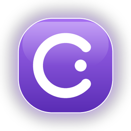

Setups, die du
verstehst.
Verwalte mehrere Minecraft-Versionen, Loader und Mod-Profile übersichtlich an einem Ort. Öffnen, kopieren, wechseln — ohne Ordner-Chaos.
Counter SurvivalVanilla ExperimentsModded Friends

COUNTER GitHub ansehenCounter Launcher · aktuell für Windows
Ein aufgeräumter Launcher für deine Counter-Instanzen: Mods entdecken, Profile verwalten, Microsoft-Konto verbinden und direkt losspielen.
Keine Fake-Links: Release-URL wird nach dem GitHub-Release ergänzt.
Fabric · 26.1.2 · zuletzt gespielt heute
Mehr als nur ein Startknopf
Counter bringt Ordnung in deine Minecraft-Welt, ohne dir vorzuschreiben, wie du spielen sollst.
Verwalte mehrere Minecraft-Versionen, Loader und Mod-Profile übersichtlich an einem Ort. Öffnen, kopieren, wechseln — ohne Ordner-Chaos.
Finde Modrinth-Inhalte direkt im Launcher und halte deine Instanzen unter Kontrolle.
Von Modpack-Ideen bis zum Gesundheitscheck: die Counter-Werkzeuge sitzen dort, wo du sie brauchst.
Der Counter-Look verbindet klare Information mit Aurora-Hintergründen, Glasflächen und kleinen Details, die sich nach dir anfühlen.
Der Launcher öffnet den offiziellen Microsoft-Gerätecode-Flow in deinem Browser.
Kein neues Konto nötig
Counter nutzt dein bestehendes Microsoft-Konto. Die Anmeldung läuft über Microsoft, Tokens bleiben lokal geschützt und ein Client-Secret gehört nicht in den Launcher.
Offizieller Flow
Microsoft, Xbox Live und Minecraft Services.
Lokaler Schutz
Gespeicherte Sessions werden vom Betriebssystem geschützt.
Wichtig
Die Azure-App muss für Minecraft Services freigegeben sein.
Bereit zum Start?
Der erste Release ist bewusst fokussiert. Weitere Plattformen folgen, sobald sie sauber gebaut und getestet sind.
Noch Fragen?
Der Launcher wird als eigenes Projekt veröffentlicht. Preis- und Lizenzdetails werden mit dem ersten öffentlichen Release festgelegt — hier wird nichts behauptet, was noch nicht entschieden ist.
Ja. Der Launcher enthält Importer für gängige Launcher-Strukturen. Prüfe beim Wechsel trotzdem deine Welten und Backups, bevor du alte Installationen entfernst.
Minecraft Java nutzt heute Microsoft-Konten. Counter reicht die Anmeldung über den offiziellen Gerätecode-Flow weiter und erstellt keinen eigenen Account.
Die Release-Pipeline ist aktuell auf Windows ausgerichtet. macOS/Linux bleiben auf der Checkliste, bis Builds und Tests für diese Plattformen zuverlässig stehen.
Counter Launcher
Release-Link, Repository und Community werden hier angeschlossen, sobald die letzten Veröffentlichungs-Schritte erledigt sind.
Für den öffentlichen Start
Diese Punkte sind absichtlich sichtbar: Damit aus einer schönen Seite ein verlässlicher Download wird.
App-ID und Minecraft-Services-Freigabe in Azure/Minecraft prüfen.
Gebündelter Microsoft-Login ist im master-basierten Stand enthalten.
Windows-Installer mit npm run dist erzeugen, signieren und als GitHub Release hochladen.
Website hosten, Domain verbinden und die echten Links in website/app.js eintragen.
Student Pack für Hosting, Domain, CI/CD oder private Repositories nutzen — erst nach Aktivierung verlinken.